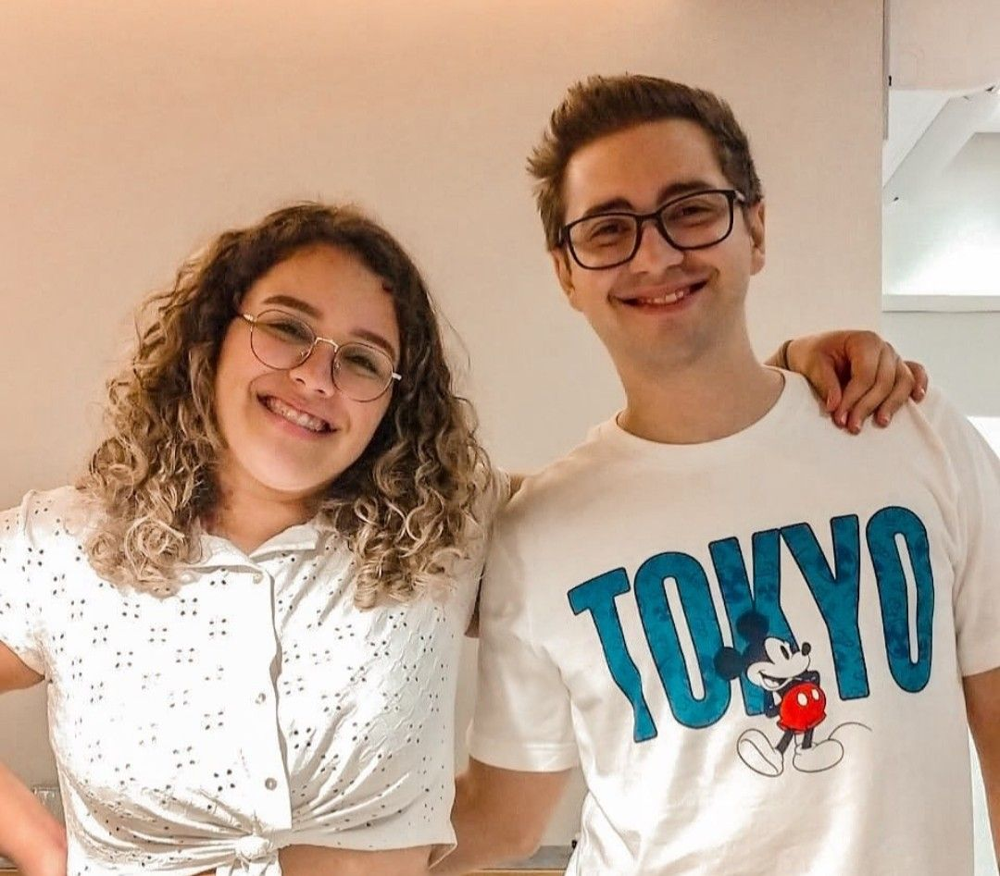

O Alan possui três gatinhos (Ellie, Remy e Flynn), os quais adotou junto de sua namorada, todos eles foram resgatados.
Por falar em namorada, ele e Maethe são o casal de streamers mais fofo da internet (segundo a fonte: eu, ha!).
Eles estão juntos fazem alguns anos, e, por mais que eu não goste de casal feliz, é nítido como os dois se gostam!
Existem diversos projetos de ajuda a animais e necessitados na comunidade de fãs do Alan, o mesmo ajuda a divulgar e sempre comenta sobre nas redes sociais ou até durante as transmissões.
É comum deparar-se com muitos influenciadores tóxicos na comunidade gamer, que não têm noção de como suas falas afetam todos os tipos de público. Apesar de estar nesse meio há anos e já ter cometido gafes, Alan sempre busca se desculpar e incentivar as pessoas com mensagens positivas e sem piadas que ofendam a moral. Gosto sempre de reforçar como ele é genuíno e faz questão de demonstrar como não é necessário ser estúpido para ser engraçado.
Dentre muitos outros motivos (como a piada do tijolinho), Alan é muito conhecido por sua PÉSSIMA dicção, mas esta dispensa explicações, a coletânea abaixo fala por si mesma:
DICÇÃO DO ALANZOKA FALHANDO POR 3 MINUTOS! (@urubuzoka)